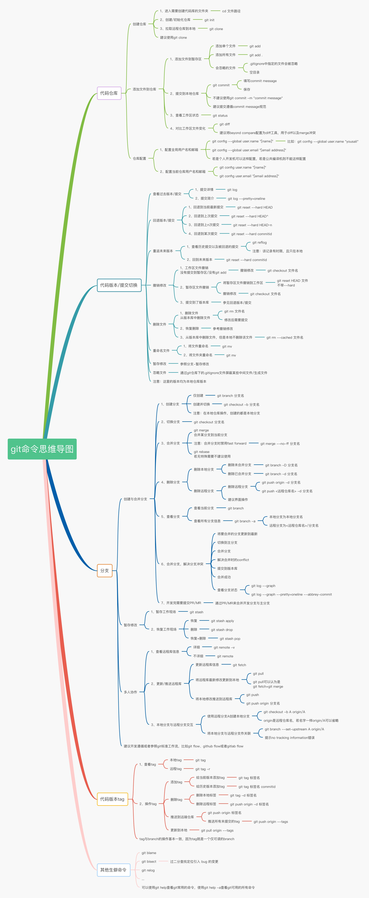

本文最后更新于 2024年8月24日 上午
git

git 资源下载
git：https://mirrors.tuna.tsinghua.edu.cn/github-release/git-for-windows/git/LatestRelease/
gitextension： https://gitextensions.github.io/
常用操作
创建仓库：git init 拉取远程到本地：git clone 添加文件：git add
[filename] 添加所有文件：git add . 忽略文件：.gitignore
提交到本地仓库：git commite -m “commit message” 查看状态：git status
对比工具：git diff （使用 bc 代替）
配置全局邮箱与用户名
1
2
3
4
| git config --global user.name "zhang.san"
git config --global user.email "zhang.san@xxx.com"
git config --globa color.ui true
git config --global init.defaultBranch main
|
生成密钥步骤： 在 Windows Terminal 中输入：
ssh-keygen -t rsa -C “zhang.san@xxx.com“
一直回车过去,在系统默认路径 C:\Users.ssh
下生成 id_rsa.pub 和 id_rsa 文件
常见问题
Q: 带模块的仓库,下载出错如何继续?
A: 进入仓库,执行git submodule update --init --recursive,或者执行git fetch [url]
A: 使用 hash 切换分支 git checkout <hash>
配置文件说明
:PROPERTIES:
:CUSTOM_ID: 配置文件说明
:END:
仓库优先级最高，个人其次，使用用户级别配置文件 仓库级别路径：.git\config
用户级别路径：C:\Users<user-name>.gitconfig
系统级别路径：C:\Program Files\Git\etc\config
配置文件命令
1
2
3
4
5
6
7
8
9
10
11
12
13
14
15
16
| [user]
name = name
email = name@xxx.com
[color]
ui = true
[alias]
br = branch
ci = commit
co = checkout
type = cat-file -t
dump = cat-file -p
st = status
unstage= reset HEAD --
last = log -1 HEAD
visual = !gitk
hist = log --pretty=format:\"%h %ad | %s%d [%an]\" --graph --date=short
|
1
2
3
4
5
6
7
8
9
10
11
12
13
14
15
16
17
18
19
20
21
22
23
24
25
26
27
28
29
30
31
| git add file_name
git commit -m "some comment"
git status
git cnfig --list
git clone [url]
git push origin HEAD:refs/for/master
//str: hash author_name author_date comment
git log --pretty=format:"%h - %an, %ar : %s" --graph
git log --since=2.weeks
git push [remote-name] [branch-name]
git config --global alias.ci commit //alias
git config --global alias.last 'log -1 HEAD' //alias
git checkout -b branch_name //创建分支并切换过去,等价于下面两行
git branch branch_name
git checkout branch_name
//创建修复分支并合并
git checkout -b hotfix
//做一些修复工作
git add .
git commit -m "做了一些修复工作"
git checkout master
git merge hotfix
git branch -d hotfix //master 移动到 hotfix 后，hotfix 就要删除掉
git branch -f main HEAD~3
git cherry-pick <提交号>
git rebase --interactive
//拉取远程仓库并合并到本地，然后上传
git pull --rebase
git push
//当使用 reset 后，使用 reflog 查看丢失的 log，可以根据哈希值回到 reset 之前
git reflog
|
1
2
3
4
5
| git config --global user.name "name"
git config --global user.email "name@xxx.com"
git config --global core.editor vim
[gui]
encoding = utf-8
|
1
2
3
4
5
|
git clone --recursive [address]
git submodule init
git submodule update
|
git 多账户配置
1
2
3
4
5
6
7
8
9
10
11
12
13
14
15
16
17
18
19
20
21
22
23
|
ssh-keygen -t rsa -C 'yourEmail@xx.com' -f ~/.ssh/gitlab-rsa
ssh-keygen -t rsa -C 'yourEmail2@xx.com' -f ~/.ssh/github-rsa
Host gitlab.com
HostName gitlab.com
PreferredAuthentications publickey
IdentityFile ~/.ssh/gitlab_id-rsa
Host github.com
HostName github.com
PreferredAuthentications publickey
IdentityFile ~/.ssh/github_id-rsa
|